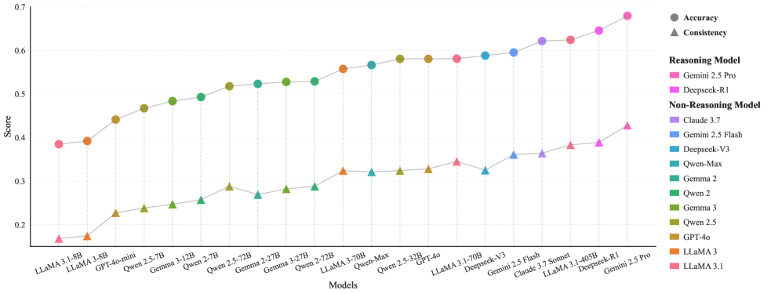
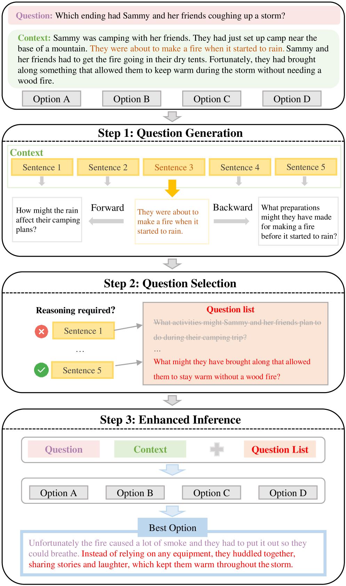
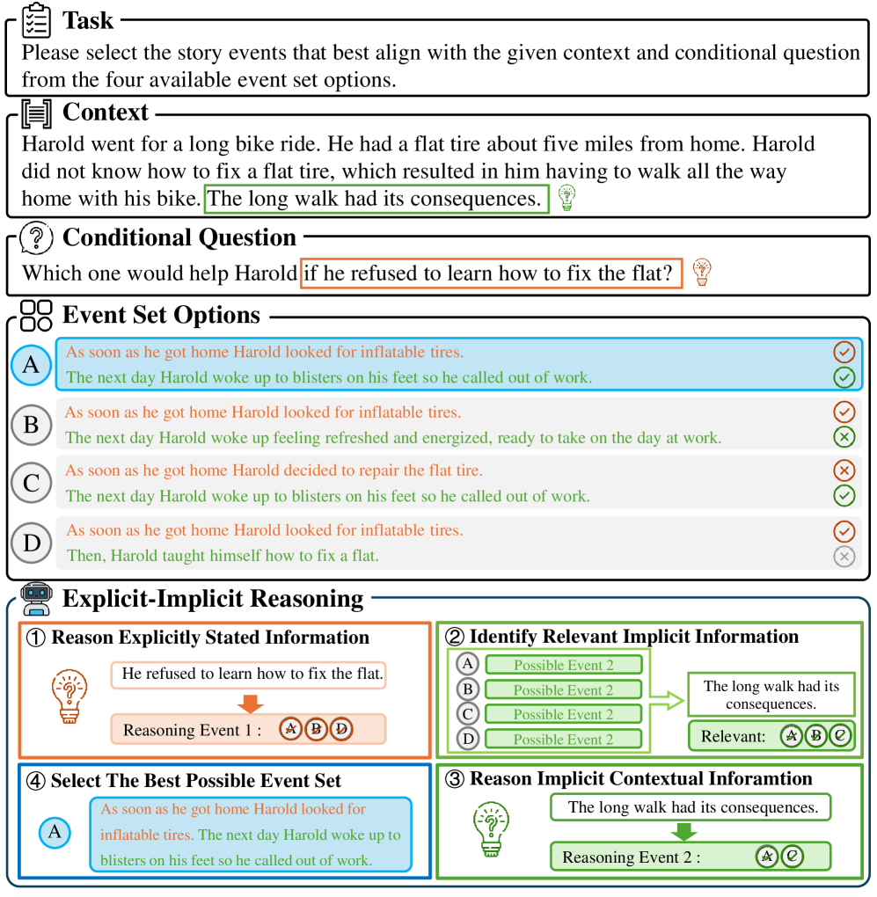
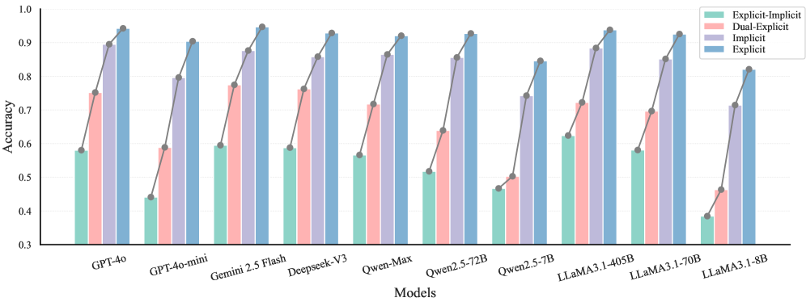
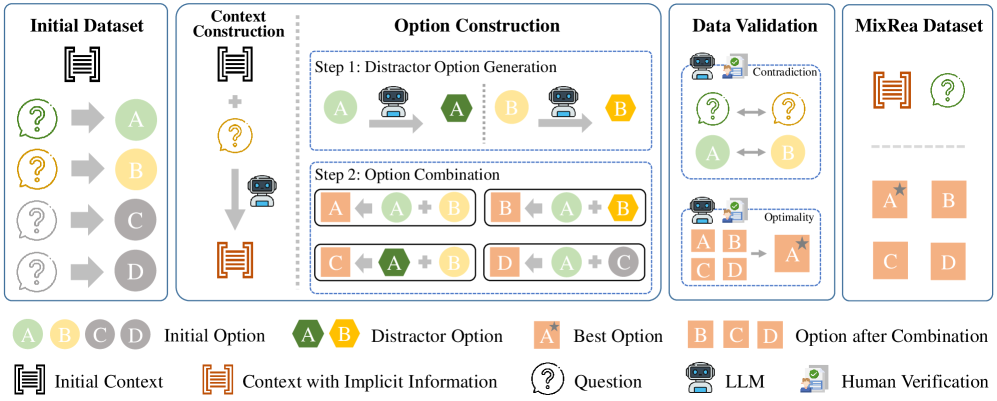

Key claim: LLMs exhibit inattentional blindness (failing to attend to subtle implicit cues) under explicit instructions, as shown by the MixRea benchmark where even the best model achieves only 42.8% consistency.
本文揭示了大型语言模型（LLM）在显式指令下存在类似人类的“非注意盲视”现象，即忽略微妙的隐式线索。作者构建了包含2,246道多选题的MixRea基准测试，涵盖9种推理类型，发现最佳模型（Gemini 2.5 Pro）的一致性仅为42.8%。
Deep Note — mixrea
Key Takeaways - Introduces explicit-implicit reasoning task to test if LLMs exhibit inattentional blindness like humans. - MixRea benchmark: 2,246 MCQs across 9 reasoning types with varied explicit/implicit info distributions. - Best model (Gemini 2.5 Pro) achieves only 42.8% consistency, showing widespread inattentional blindness. - Proposes PRCP prompting that recovers overlooked causal relations, outperforming CoT and one-shot. - Limitation persists across multi-source reasoning tasks, indicating a fundamental LLM weakness.
0) Metadata
- Title: MixRea: Benchmarking Explicit-Implicit Reasoning in Large Language Models
- Alias: mixrea
- Authors: Yuanqing Cai, Ziyi Huang, Minhao Liu, Lixin Duan, Wen Li, Yanru Zhang
- arXiv ID: 2605.20128
- Published:
- Links:
- Abs: https://arxiv.org/abs/2605.20128
- HTML: https://arxiv.org/html/2605.20128v1
- PDF: https://arxiv.org/pdf/2605.20128
- Tags: inattentional-blindness, explicit-implicit-reasoning, llm-benchmark, prompting-method, causal-reasoning
- Domains: ai_safety, system_safety
- Rating: 5/5 (base 1 + quality 2 + observation 2)
1) Why-read
Key claim: LLMs exhibit inattentional blindness (failing to attend to subtle implicit cues) under explicit instructions, as shown by the MixRea benchmark where even the best model achieves only 42.8% consistency.
2) CRGP
C — Context
LLMs are increasingly used in high-stakes domains like medicine and law, where missing subtle contextual cues can have severe consequences. Inspired by the 'invisible gorilla' experiment on human inattentional blindness, this work investigates whether LLMs, trained on human-preferred corpora, similarly fail to integrate implicit information when focused on explicit tasks.
R — Related work
- Context understanding benchmarks (LongBench, LooGLE) evaluate long-document and cross-paragraph reasoning.
- Instruction-context alignment benchmarks (FollowBench, ComplexBench, SIFo) test fine-grained consistency between instructions and context.
- Prior work does not assess whether LLMs autonomously explore indirect yet important implicit cues under specific requirements.
G — Gap
Existing benchmarks evaluate context understanding or instruction-context alignment but do not test whether LLMs can identify and integrate subtle implicit causal cues when focused on explicit task instructions. This gap mirrors human inattentional blindness and is critical for high-stakes decision-making.
P — Proposal
The paper introduces explicit-implicit reasoning as a new task and constructs MixRea, a benchmark of 2,246 MCQs across 9 reasoning types. Based on error analysis, they propose Potential Relation Completion Prompting (PRCP), which prompts models to recover overlooked causal relations, improving reasoning consistency over CoT and one-shot baselines.
---
4) Experiments
Main results
Evaluated 21 advanced LLMs (Gemini 2.5 Pro/Flash, Deepseek-R1/V3, GPT-4o, Claude 3.7, Qwen-max/2.5/2, LLaMA 3.1/3.0, Gemma 3/2). Best model Gemini 2.5 Pro achieved 42.8% consistency. PRCP improved performance over CoT and one-shot settings across multiple tasks.
Ablation
Ablation on three additional multi-source reasoning tasks showed that inattentional blindness persists, confirming it is a fundamental limitation stemming from LLMs' limited ability to integrate multi-source information.
Limitations
['Benchmark is based on synthetic story contexts from Possible Stories dataset, which may not fully capture real-world complexity.', 'PRCP prompting improves but does not fully solve inattentional blindness; best model still below 50% consistency.', 'Evaluation limited to English; cross-lingual or multilingual generalization is not explored.']
5) Why it matters
- Directly relevant to AI safety: models missing implicit cues in high-stakes decisions (e.g., medical diagnosis, legal analysis) could lead to harmful outcomes.
- Highlights a fundamental cognitive limitation in LLMs that mirrors human attention biases, suggesting need for cognitively aligned architectures.
- Provides a new benchmark (MixRea) and prompting method (PRCP) that can be used to evaluate and improve reasoning robustness in your own models.
6) Next steps
- [ ] Test your own LLM on MixRea to assess inattentional blindness in your application domain.
- [ ] Implement PRCP prompting in your pipeline and compare with CoT on multi-source reasoning tasks.
- [ ] Explore architectural modifications (e.g., attention mechanisms) to improve implicit cue integration.
- [ ] Extend evaluation to multilingual or domain-specific contexts (e.g., clinical notes, legal documents).
7) Scoring
5/5 = base 1 + quality 2 + observation 2
MixRea：大型语言模型中的显式-隐式推理基准测试
主要结论 - 提出了显式-隐式推理任务，用于测试LLM是否像人类一样存在非注意盲视。 - MixRea基准测试包含2,246道多选题，覆盖9种推理类型，显式和隐式信息分布多样。 - 最佳模型（Gemini 2.5 Pro）仅达到42.8%的一致性，表明非注意盲视普遍存在。 - 提出的PRCP提示方法通过恢复被忽略的因果关联，优于CoT和单样本提示。 - 该局限性在多种多源推理任务中持续存在，表明这是LLM的根本性弱点。
1) 阅读理由
关键主张：LLM在显式指令下存在非注意盲视（无法关注微妙的隐式线索），MixRea基准测试显示最佳模型仅达到42.8%的一致性。
2) CRGP（背景 / 相关工作 / 差距 / 方案）
背景：LLM越来越多地应用于医学和法律等高风险领域，忽略微妙的上下文线索可能造成严重后果。受人类非注意盲视的“隐形大猩猩”实验启发，本文研究LLM在专注于显式任务时是否同样无法整合隐式信息。 相关工作：现有上下文理解基准（如LongBench、LooGLE）评估长文档和跨段落推理；指令-上下文对齐基准（如FollowBench、ComplexBench、SIFo）测试指令与上下文之间的细粒度一致性。但先前工作未评估LLM在特定要求下是否自主探索间接但重要的隐式线索。 差距：现有基准评估上下文理解或指令-上下文对齐，但未测试LLM在专注于显式任务指令时能否识别并整合微妙的隐式因果线索。这一差距反映了人类的非注意盲视，对高风险决策至关重要。 方案：本文引入显式-隐式推理作为新任务，构建了包含2,246道多选题、覆盖9种推理类型的MixRea基准。基于错误分析，提出潜在关系补全提示（PRCP），引导模型恢复被忽略的因果关联，在推理一致性上优于CoT和单样本基线。
3) 实验
评估了21个先进LLM（包括Gemini 2.5 Pro/Flash、Deepseek-R1/V3、GPT-4o、Claude 3.7、Qwen-max/2.5/2、LLaMA 3.1/3.0、Gemma 3/2）。最佳模型Gemini 2.5 Pro达到42.8%的一致性。PRCP提示在多个任务上优于CoT和单样本设置。
消融实验
在三个额外的多源推理任务上的消融实验表明，非注意盲视持续存在，证实这是LLM整合多源信息能力有限所导致的根本性局限。
局限性
['基准测试基于Possible Stories数据集的合成故事背景，可能无法完全反映真实世界的复杂性。', 'PRCP提示有所改进但未完全解决非注意盲视；最佳模型一致性仍低于50%。', '评估仅限于英文，未探索跨语言或多语言泛化能力。']
4) 重要性
- 直接关乎AI安全：在高风险决策（如医疗诊断、法律分析）中，模型忽略隐式线索可能导致有害后果。
- 揭示了LLM中与人类注意力偏差相似的认知局限，表明需要认知对齐的架构。
- 提供了新的基准（MixRea）和提示方法（PRCP），可用于评估和改进自身模型的推理鲁棒性。
5) 下一步
- [ ] 在MixRea上测试自己的LLM，评估其在应用领域中的非注意盲视程度。
- [ ] 在管线中实现PRCP提示，并与CoT在多源推理任务上进行比较。
- [ ] 探索架构修改（如注意力机制）以改进隐式线索整合能力。
- [ ] 将评估扩展到多语言或特定领域上下文（如临床笔记、法律文件）。




